Entregable 2 · Sitio web
1.Presentación y comprobación del sitio
Este documento describe el proceso de construcción del sitio web de la marca personal ASummerTenshi, correspondiente al segundo entregable del proyecto parcial, y presenta el resultado final después de aplicar los ajustes de diseño y contenido a la propuesta planeada en la primera actividad.
El sitio está publicado y funcionando en la siguiente dirección, con dominio propio y alojamiento en Cloudflare Pages:
https://asummertenshi.studio/
La comprobación se realizó el 18 de octubre de 2026 desde un navegador automatizado (Playwright). Las siete rutas del sitio respondieron con código HTTP 200 y sin errores en la consola del navegador, tanto en escritorio (1440 × 900) como en móvil (390 × 844).
| Ruta | Sección | Estado |
|---|---|---|
| / | Inicio | 200, sin errores |
| /about | About Me | 200, sin errores |
| /services | Services | 200, sin errores |
| /portfolio | Portfolio | 200, sin errores |
| /showcase | ShowCase Portfolio | 200, sin errores |
| /terms | Terms of Service | 200, sin errores |
| /contact | Contact (nueva) | 200, sin errores |
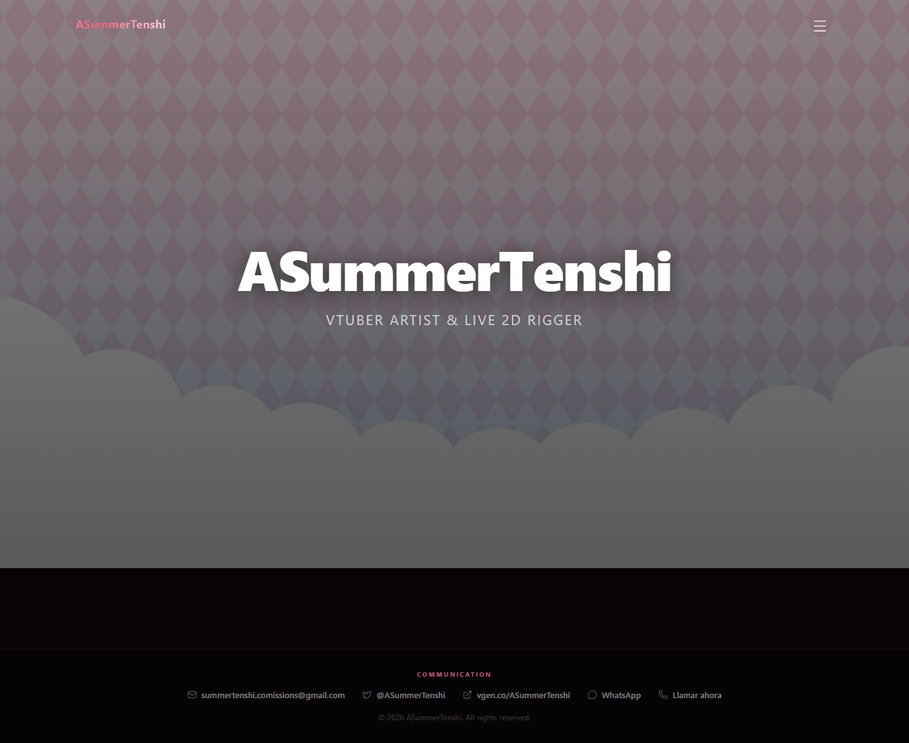
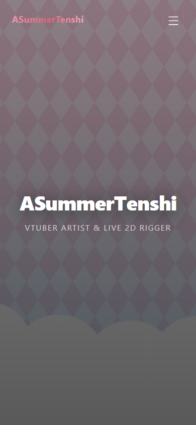
2.Logotipo del proyecto
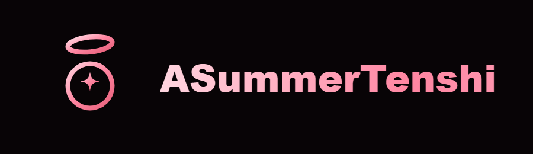
El logotipo se diseñó como un isotipo geométrico formado por tres elementos que resumen la identidad del proyecto:
- Halo inclinado: alude al significado del apodo, pues tenshi quiere decir “ángel” en japonés. La inclinación le da movimiento y cercanía, en lugar de la rigidez de un aro perfecto.
- Sol con destello central: representa el verano (summer) y el brillo creativo; el destello de cuatro puntas funciona como la chispa que da vida a cada personaje.
- Gradiente rosa pastel: se tomó de la paleta del personaje principal de la marca, de modo que el logo y el modelo VTuber se reconocen como parte de la misma familia visual.
El isotipo transmite los valores de la marca: dulzura, calidez e identidad propia. Se aleja de la imagen corporativa fría para acercarse al estética kawaii propia de la comunidad VTuber, sin perder legibilidad ni sobriedad.
Adaptabilidad a diferentes tamaños y formatos
El logo se construyó en formato vectorial (SVG), por lo que escala sin pérdida de calidad desde el favicon de 16 píxeles hasta una portada impresa. Se prepararon versiones para cada contexto:
| Versión | Tamaño | Uso |
|---|---|---|
| Vector editable (SVG) | escalable | Fuente maestra del isotipo y aplicaciones futuras |
| PNG 512 px | 512 × 512 | Documentos, portadas y redes |
| PNG 192 px | 192 × 192 | Iconos de aplicación y avatares |
| PNG 64 px | 64 × 64 | Miniaturas y espacios reducidos |
| Favicon SVG | 16 a 32 px | Pestaña del navegador, con fondo redondeado para mantener contraste |
| Con marca (wordmark) | horizontal | Encabezado del sitio y pie de página |
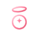
3.Información de la página
¿Qué propósito te gustaría cumplir creando un sitio web como este?
Quiero que el sitio cumpla tres propósitos encadenados: presentar mi especialidad como artista VTuber y riggers de Live 2D, demostrar con evidencia visual y audiovisual la calidad de mi trabajo, y facilitar que una persona interesada inicie una solicitud por un canal claro. El sitio es mi vitrina profesional y mi punto de contacto con clientes internacionales.
¿Cuál es el tema principal del sitio web?
Servicios creativos para VTubers y creadores digitales: diseño e ilustración de personajes, arte de modelo listo para Live 2D, rigging, emotes e ilustración anime. Todo gira en torno a un solo tema: crear personajes virtuales con identidad propia y llevarlos hasta el movimiento.
¿A qué público va dirigido el sitio web?
- VTubers debutantes: personas que quieren crear su primer personaje y necesitan entender la diferencia entre arte, rigging y paquete completo.
- Streamers y VTubers activos: quienes buscan actualizar su modelo, añadir expresiones, emotes o vestuario nuevo.
- Creadores independientes de contenido: que requieren ilustración o diseño de personaje para sus canales.
Datos relevantes y su ubicación
| Dato | Ubicación en el sitio |
|---|---|
| Nombre de la marca: ASummerTenshi, “VTuber Artist & Live 2D Rigger” | Logotipo y lema en la barra de navegación y en el hero de inicio |
| Logotipo | Barra de navegación, pie de página y favicon |
| Oferta de servicios (cinco categorías con entregables y complementos) | Página Services y tarjetas destacadas en inicio |
| Correo de comisiones | Formulario de contacto, página Contact y pie de página |
| X / Twitter, VGen y WhatsApp | Página Contact, menú móvil y pie de página en todas las rutas |
| Teléfono | Página Contact y pie de página |
| Condiciones de pago, revisiones, plazos, derechos y reembolsos | Página Terms of Service, enlazada desde el formulario de contacto |
Los datos están ordenados por prioridad: primero la identidad, después la oferta, al final los canales y las condiciones, de modo que un visitante nuevo comprende la marca antes de decidir cómo contactar.
4.Elemento original diferenciador
El elemento que diferencia a este sitio de otros portafolios de artistas es la coherencia total entre la artista, su personaje y su escaparate: la paleta rosa pastel del sitio es la misma que la de mi modelo VTuber, el logotipo resume mi nombre (ángel de verano) y cada texto habla con la misma voz. Un cliente no contrata a una empresa; contrata a una persona cuyo estilo ya está demostrado en su propia marca.
A ello se suman dos decisiones concretas de innovación y creatividad:
- Ruta de comisión sin fricción: el formulario de la página Contact no guarda datos en servidores externos; prepara un correo prellenado con el nombre del cliente, su correo y el tipo de servicio elegido. Así se reduce el esfuerzo de escribir la primera solicitud sin sacrificar la privacidad.
- Evidencia en movimiento: la página ShowCase integra los modelos Live 2D funcionando en video, para que el cliente vea expresiones, ángulos y físicas antes de encargar, algo que una imagen estática no puede demostrar.
5.Imágenes y recursos integrados
En el sitio se integraron imágenes de mi autoría y recursos gráficos de apoyo. La lista completa por tipo es la siguiente:
| Tipo de recurso | Qué se integró | Cómo se empleó |
|---|---|---|
| Ilustraciones originales | 7 obras del portafolio (Outfits, Awa Jelly, Strawberry Art, CRK OC Style, Background, Loading Screen, Celes Vtuber) | Galería con descripciones al pasar el cursor y visor ampliado (lightbox) con título y texto alternativo |
| Ilustraciones de servicio | Arte de Live 2D Rigging + Art, Emotes e Illustration | Cabeceras visuales de cada categoría y tarjetas del inicio |
| Fotografías | No se usaron fotografías | El proyecto es 100 % ilustración digital propia; se priorizó obra real sobre bancos de imágenes |
| Iconos | Conjunto de iconos de línea (Lucide) en trazo fino | Navegación, canales de contacto, características de servicios y acciones del formulario |
| Infografías | No se emplearon infografías estáticas | La estructura por tarjetas y listas de entregables cumple la misma función de resumir información compleja |
| Animaciones | Animaciones de interfaz con Framer Motion | Aparición de secciones al hacer scroll, menú móvil con transición, tarjetas con elevación, galería con lupa suave |
| Videos | 2 demostraciones Live 2D alojadas en YouTube | Reproductores de la página ShowCase con título accesible |
A continuación se muestran seis de las imágenes empleadas, con su función dentro del sitio.
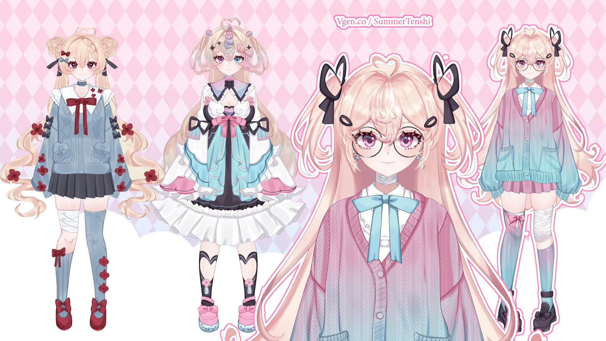
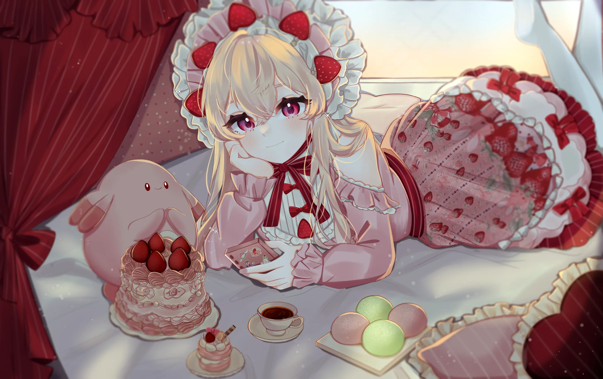
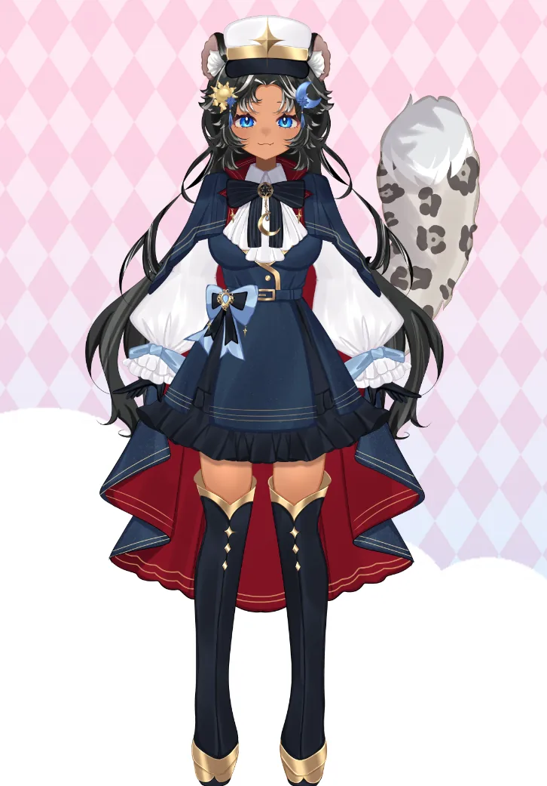
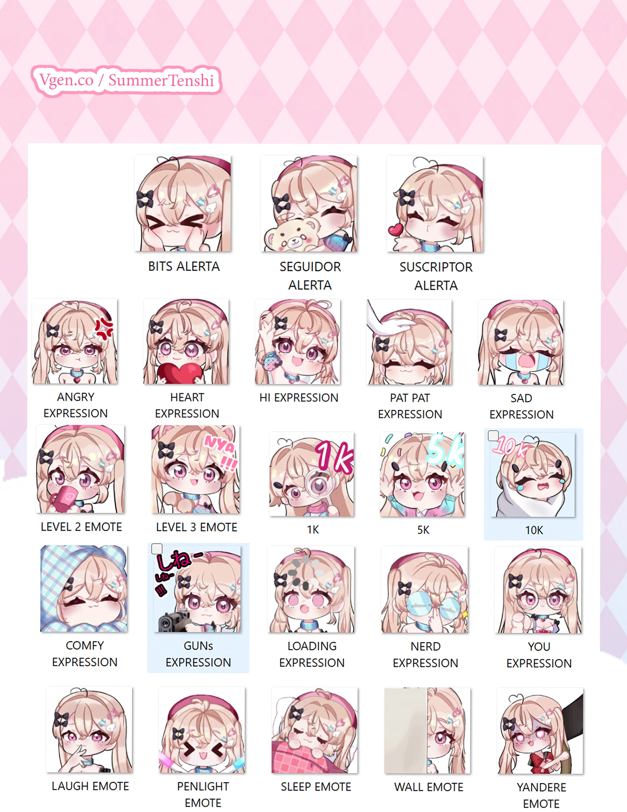
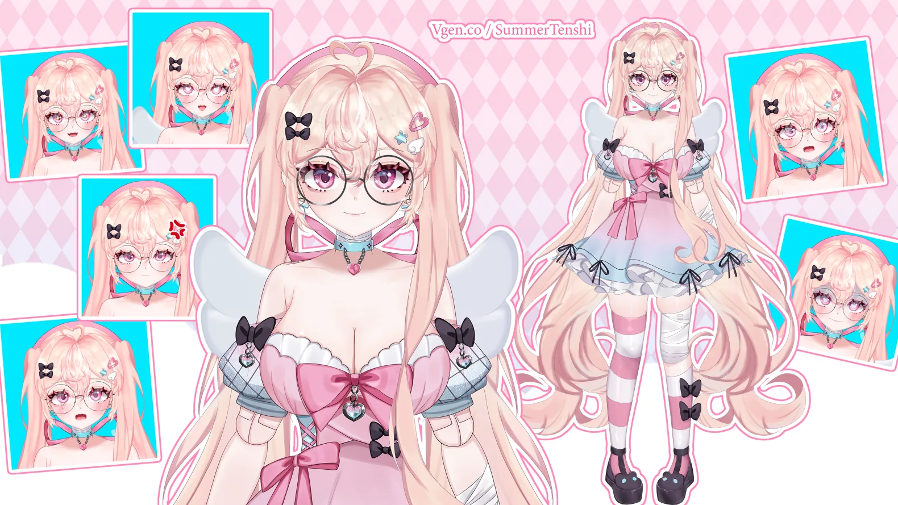
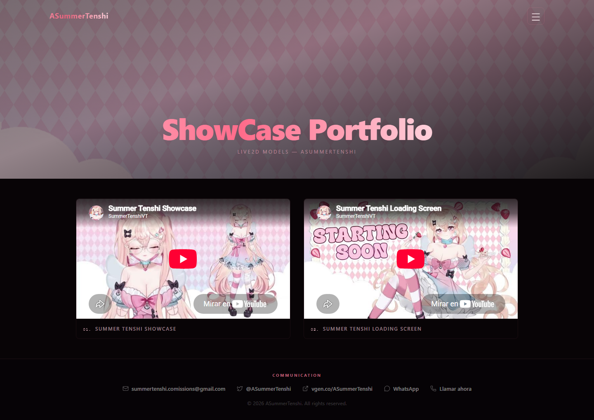
6.Diseño: estilo y elementos visuales
a) Paleta de colores
La paleta conserva los colores del modelo VTuber de la marca: un fondo negro cálido que hace resaltar el rosa pastel, un texto en marfil rosado de alta legibilidad y una escala de rosas en seis intensidades que se aplican en acentos, botones, bordes y degradados. Los valores RGB documentados son:
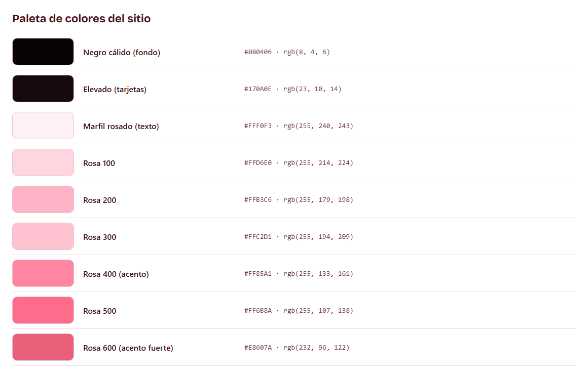
| Color | Muestra | HEX | RGB | Uso principal |
|---|---|---|---|---|
| Negro cálido | #080406 | 8, 4, 6 | Fondo general | |
| Elevado | #170A0E | 23, 10, 14 | Tarjetas y paneles | |
| Marfil rosado | #FFF0F3 | 255, 240, 243 | Texto principal | |
| Rosa 100 | #FFD6E0 | 255, 214, 224 | Textos de énfasis suave | |
| Rosa 200 | #FFB3C6 | 255, 179, 198 | Botones primarios, enlaces | |
| Rosa 300 | #FFC2D1 | 255, 194, 209 | Degradados y transiciones | |
| Rosa 400 (acento) | #FF85A1 | 255, 133, 161 | Acento principal: foco, hovers, iconos | |
| Rosa 500 | #FF6B8A | 255, 107, 138 | Degradados de botones y banda de contacto | |
| Rosa 600 | #E8607A | 232, 96, 122 | Acento fuerte, sombras con tinte rosa |
b) Tipografías
Se eligieron tres familias con personalidad complementaria, autoalojadas en formato WOFF2 para un cargado rápido:
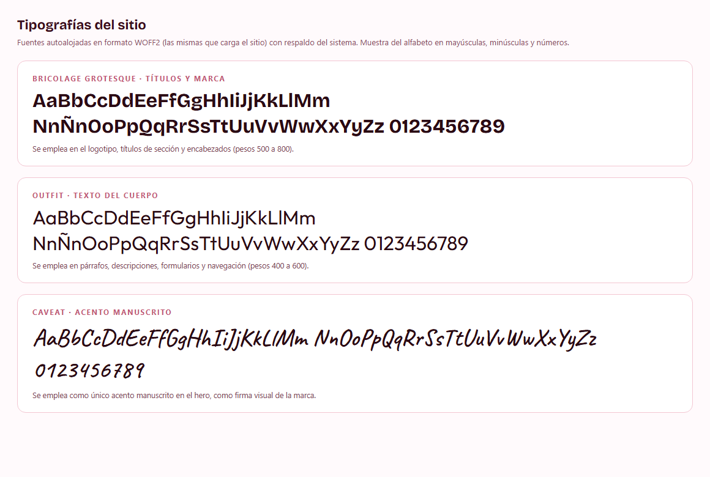
- Bricolage Grotesque (pesos 500 a 800): títulos, logotipo y encabezados. Su trazo expresivo evoca titulares de cómic sin sacrificar nitidez.
- Outfit (pesos 400 a 600): cuerpo del texto, formularios y navegación. Geométrica y muy legible en pantalla.
- Caveat (peso 600): un único acento manuscrito en el hero, como firma de la artista dentro de su propia página.
c) Texturas y patrones
La única textura del sitio es el patrón de rombos rosas pastel que aparece en el fondo del hero y de las cabeceras de página. Se emplea con opacidad contenida para no competir con el contenido, y aporta la reminiscencia kawaii del papel decorado sin recurrir a imágenes recargadas.
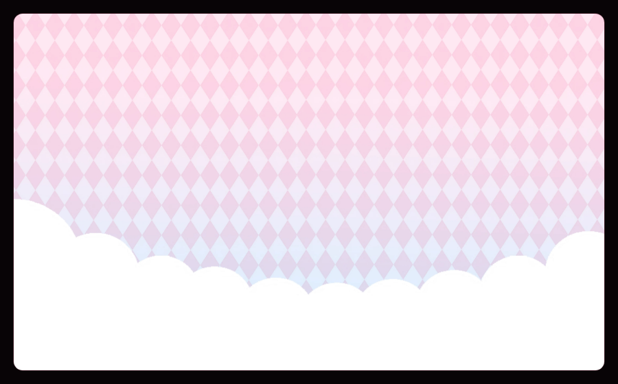
d) Consistencia visual
Todas las decisiones visuales se concentraron en un sistema de tokens (colores, espaciados, radios, sombras, tiempos de animación) que cada página consume de la misma fuente. Como resultado: un solo radio de esquina por tipo de elemento (tarjetas de 24 px, botones completamente redondos), un solo acento cromático, sombras siempre teñidas de rosa en lugar de negro puro, y animaciones con la misma física de resorte en todo el sitio. Esta consistencia es lo que hace que siete páginas distintas se perciban como un solo lugar.
7.Organización y navegación
a) Navegación intuitiva
La navegación global es persistente y queda fija al hacer scroll. En escritorio se muestran los enlaces de las seis secciones siempre visibles, con subrayado animado en el enlace activo; en móvil, el mismo menú se compacta en un botón que abre un panel lateral con los mismos destinos, numerados para orientar la lectura. El panel se puede cerrar con la tecla Escape o tocando el fondo oscuro, y atrapa el foco del teclado para no perder al usuario dentro del menú.
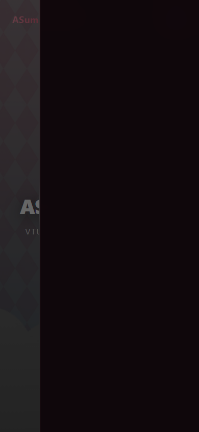
b) Etiquetas y categorías
- Las etiquetas del menú son cortas y están en inglés (“About Me”, “Services”, “Portfolio”, “ShowCase Portfolio”, “Terms of Service”, “Contact”), coherente con la audiencia internacional de la comunidad VTuber y con las rutas del sitio.
- Los servicios se agrupan en cinco categorías (Live 2D Rigging + Art, Vtuber Art, Rigging Services, Emotes, Illustration), cada una con sus entregables, complementos y condiciones en listas claras.
- El portafolio ordena las siete obras en una galería tipo mosaico con título visible en cada pieza.
- Los términos del servicio se dividen en seis apartados (pagos, revisiones, Live2D, plazos, propiedad intelectual y reembolsos) para localizar rápido la regla que se busca.
8.Elementos del sitio y cómo quedaron
| Elemento | Cómo quedó al terminar el proyecto |
|---|---|
| Barra de navegación | Fija, con logotipo gráfico, enlaces persistentes en escritorio y menú lateral en móvil con foco controlado y cierre por Escape. |
| Hero de inicio | Ilustración de fondo a pantalla completa, lema manuscrito, título de marca, subtítulo profesional y dos botones: “View Services” y “Get in Touch”. |
| Propuesta de valor | Sección de bienvenida que explica el diferencial (diseño, arte y rigging en una sola marca) con enlace al perfil. |
| Servicios destacados | Tres tarjetas con imagen, icono, descripción y enlace a la página completa de servicios. |
| Vista previa del portafolio | Cuatro obras en mosaico asimétrico con nombre visible al pasar el cursor y botón al portafolio completo. |
| Llamado al showcase | Tarjeta con imagen de la animación de carga y botón hacia los videos de modelos en movimiento. |
| Banda de contacto | Panel en degradado rosa con la invitación a iniciar la comisión y botón directo a la página Contact. |
| Galería del portafolio | Siete obras con descripción en el cursor y visor ampliado (lightbox) con título y texto alternativo. |
| Formulario de contacto | Campos de nombre, correo, tipo de servicio y detalles; al enviar, abre el cliente de correo con el mensaje prellenado dirigido al correo de comisiones. |
| Canales directos | Cinco tarjetas (correo, X, VGen, WhatsApp y teléfono) con nota sobre el uso recomendado de cada uno. |
| Pie de página | Marca con logotipo, enlaces de secciones, botón “Start a commission” y la fila de canales de comunicación en todas las rutas. |
| Detalles técnicos | Salto al contenido para lectores de pantalla, foco visible en rosa, respeto de “reducir movimiento”, imágenes con texto alternativo y rutas con encabezados ordenados. |
9.Pantallas del sitio
Las siguientes capturas corresponden al sitio publicado el 18 de octubre de 2026.
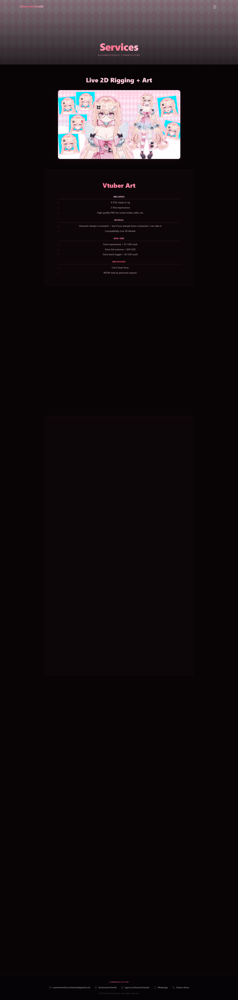
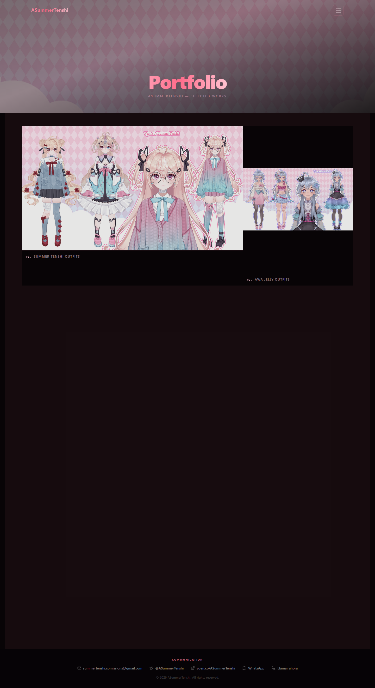
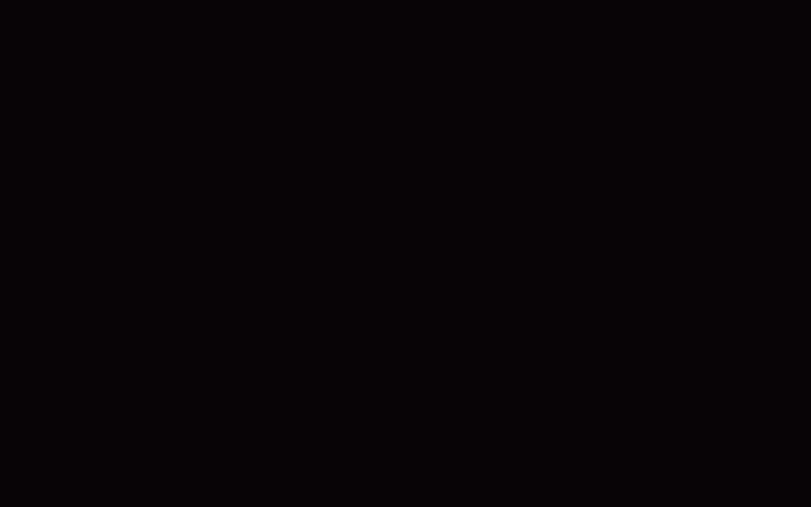
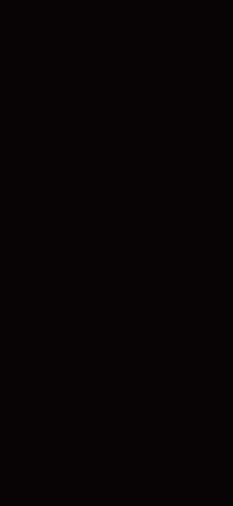
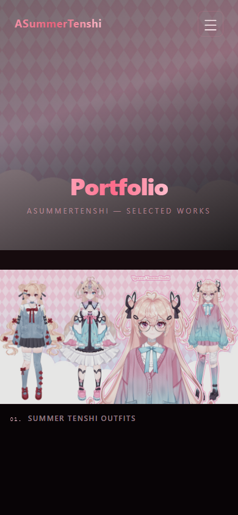
10.Esquema final del sitio
El mapa final confirma la arquitectura planeada en la actividad 1 e incorpora los ajustes realizados en este entregable, señalados en el recuadro inferior del esquema.
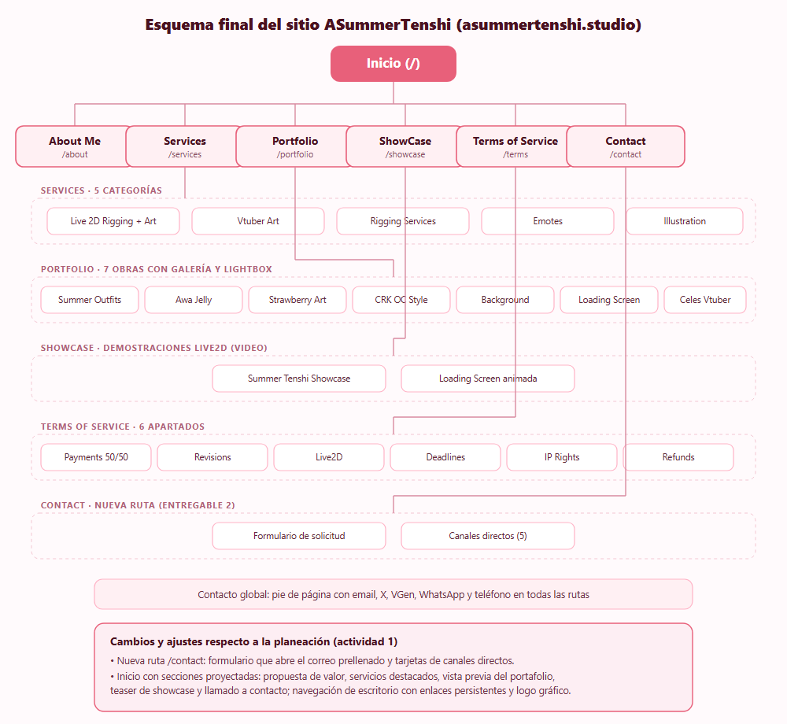
Cambios respecto a la planeación: se añadió la ruta /contact con formulario y canales; el inicio pasó de un hero vacío a una página con secciones proyectadas y llamados a la acción; la navegación de escritorio ahora muestra enlaces persistentes; y el logotipo gráfico se incorporó a la barra y al pie. Las rutas, etiquetas y contenidos centrales se mantuvieron estables, como se había decidido.
11.Proceso: plataforma, alojamiento y dominio
El sitio se construyó con React y Vite, un generador de sitios estáticos que compila el proyecto a archivos HTML, CSS y JavaScript optimizados, ideales para un portafolio sin backend. Las animaciones se implementaron con Framer Motion y los iconos con la biblioteca Lucide, ambas de código abierto.
Como alojamiento se eligió Cloudflare Pages, cuyo plan gratuito incluye distribución en red global, certificado de seguridad y despliegues automáticos: cada cambio que se sube al repositorio del proyecto dispara una nueva compilación y publicación en segundos. El nombre de dominio asummertenshi.studio se comprobó disponible con una herramienta de búsqueda de dominios antes de registrarlo; es corto, memorable y refuerza la actividad creativa de la marca (extensión .studio).
Durante este entregable se aplicaron mejoras de diseño y rendimiento sobre la versión publicada: las ilustraciones se convirtieron de PNG a WebP (el peso de las imágenes bajó de 44.4 MB a 2.6 MB, una reducción del 94 %), se añadieron las secciones de inicio y la página de contacto, y se corrigieron detalles de navegación y tipografía.
12.Conclusión
Al terminar este proceso, la propuesta escrita de la primera actividad se convirtió en un sitio funcional, publicado con dominio propio y verificado ruta por ruta. El resultado conserva la esencia planeada: una marca personal alrededor de la creación de personajes VTuber y modelos Live 2D, con evidencia visual, condiciones claras y contacto directo. Al mismo tiempo, el sitio ganó elementos que la planeación solo insinuaba: un logotipo con identidad propia, una página de inicio que sí guía al visitante, una vía de solicitud sin fricción y un rendimiento que permite que las ilustraciones carguen rápido sin perder calidad.
Las decisiones de diseño tomadas en este entregable (paleta fiel al personaje, tipografías expresivas pero legibles, un solo acento cromático y animaciones con propósito) demuestran que es posible elevar la calidad percibida de un portafolio sin romper su personalidad. Como trabajo futuro queda pendiente validar el sitio con usuarios reales mediante la prueba moderada planeada en la actividad 1, y medir los clics hacia VGen y los canales de contacto para establecer una línea base de conversión.
13.Bibliografía
ASummerTenshi. (s. f.). ASummerTenshi — Portfolio. Consultado el 18 de octubre de 2026, en https://asummertenshi.studio/
Cloudflare. (s. f.). Cloudflare Pages documentation. Consultado el 18 de octubre de 2026, en https://developers.cloudflare.com/pages/
Google Fonts. (s. f.). Bricolage Grotesque, Outfit y Caveat. Consultado el 18 de octubre de 2026, en https://fonts.google.com/
Guía de organización de información en un proyecto web. (s. f.). [Material de clase, documento de Word].
Lucide. (s. f.). Lucide icons — documentación. Consultado el 18 de octubre de 2026, en https://lucide.dev/
Motion. (s. f.). Framer Motion — documentación. Consultado el 18 de octubre de 2026, en https://motion.dev/
Real Academia Española. (2010). Nueva gramática de la lengua española. Espasa.
Vite. (s. f.). Documentación oficial de Vite. Consultado el 18 de octubre de 2026, en https://vite.dev/
World Wide Web Consortium. (2024, 12 de diciembre). Web Content Accessibility Guidelines (WCAG) 2.2. https://www.w3.org/TR/2024/REC-WCAG22-20241212/
14.Revisión de ortografía
Los textos visibles del sitio están redactados en inglés, idioma elegido por la audiencia internacional de la comunidad VTuber, y fueron revisados con atención a concordancia, puntuación y uso consistente de los nombres de marca y de servicios. Los únicos textos en español de la interfaz son atributos accesibles (etiquetas para lectores de pantalla), que también se verificaron.
La redacción de este documento se revisó conforme a la Nueva gramática de la lengua española (Real Academia Española, 2010): se cuidó la acentuación de palabras como “página”, “móvil”, “ilustración” y “demostración”; el uso correcto de signos de interrogación y admiración iniciales; la concordancia de número y género; y la puntuación de las enumeraciones. Las palabras extranjeras empleadas (rigging, livestream, showcase, lightbox, software, hardware) se escriben en redonda, sin comillas ni cursivas, de acuerdo con la práctica recomendada para tecnicismos asentados.
Nota de entrega. Sitio publicado y verificado en https://asummertenshi.studio/ el 18 de octubre de 2026. Evidencias generadas con Playwright y conservadas en la carpeta evidencias/ que acompaña a este documento.